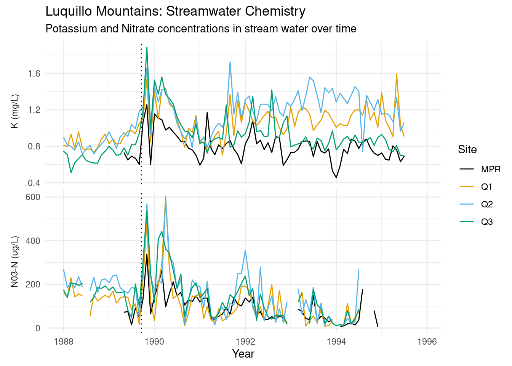
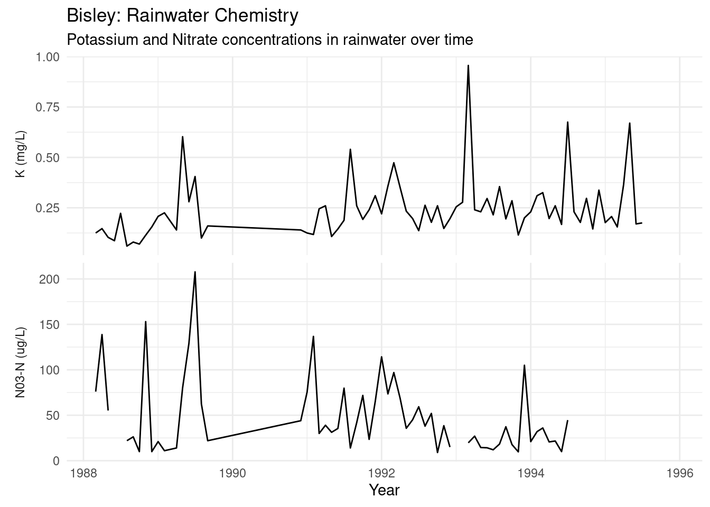
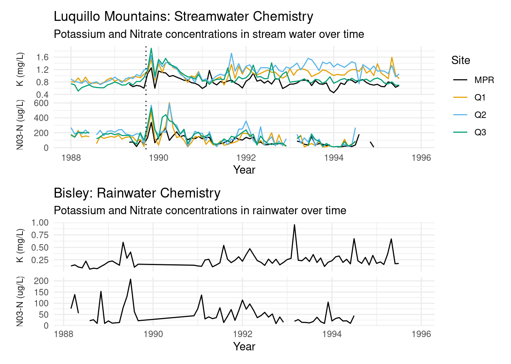

library(tidyverse)
library(janitor)
library(patchwork)
library(paletteer)LEF LTER Plot
LEF LTER Stream Chemistry
Read in stream chemistry data
PRM_data <- read_csv("/courses/EDS214/group_project/A1/LEF_data/RioMameyesPuenteRoto.csv")
BQ1_data <- read_csv("/courses/EDS214/group_project/A1/LEF_data/QuebradaCuenca1-Bisley.csv")
BQ2_data <- read_csv("/courses/EDS214/group_project/A1/LEF_data/QuebradaCuenca2-Bisley.csv")
BQ3_data <- read_csv("/courses/EDS214/group_project/A1/LEF_data/QuebradaCuenca3-Bisley.csv")Using rbind() to join all the data into one data frame
all_data <- rbind(BQ2_data, BQ3_data, BQ1_data, PRM_data)
#rbind easier for this than full_join()Tidying the data
tidy_data <- all_data %>%
select(Sample_Date, K, `NO3-N`, Sample_ID) %>% #selecting only the columns (variables) we need
clean_names() %>% #puts column names in lower snake case
filter(sample_date > '1988-01-01' & sample_date < '1995-12-31') %>% #filtering dates to only include data in the original plots time period
mutate(year_month = ym(format(as.Date(sample_date), "%Y-%m"))) %>% #creating a year_month variable that does not include day
pivot_longer(cols = c(k, no3_n), names_to = "chemical", values_to = "measurement") %>% #pivot to have k and no3_n in one column "chemical" and the values in "measurement"
group_by(chemical, sample_id, year_month) %>% #grouping by chemical, site, and the year_month
summarise(mean_measurement = mean(measurement, na.rm = TRUE)) #getting the avg of each chemical by monthPlotting average K and and NO3-N levels by month
lef_graph <- ggplot(data = tidy_data, aes(x = year_month, y = mean_measurement, color = sample_id)) +
geom_line() + #line plot
geom_vline(xintercept = as.Date("1989-09-18"), linetype = "dotted", color = "black") + #vert. line indicating when there was a hurricane
facet_wrap(~chemical, #putting each chemical on their own plot
labeller = as_labeller(c(k =" K (mg/L)", #changes y-axis labels
no3_n = "N03-N (ug/L)")) ,
scales = "free_y", #each chemical on their own scale
nrow = 2, #plots stacked rather than side by side
strip.position = "left") + #y-axis labels on left side of plot
ylab(NULL) + #no overall y-axis label
theme_minimal()+
theme(strip.background = element_blank(), #makes y-axis label background blank
strip.placement = "outside") + #y-axis outside of plot area
scale_color_paletteer_d(palette = "ggthemes::colorblind") + #color blind friendly theme
labs(x = "Year",
subtitle = "Potassium and Nitrate concentrations in stream water over time",
title = "Luquillo Mountains: Streamwater Chemistry",
color = "Site")
lef_graph
Bisley Rain
Read in Bisley rain chemistry data
rain_data <- read_csv("/courses/EDS214/group_project/A1/RainCollector-Bisley2.csv") Tidying the data
tidy_rain <- rain_data |>
select(Sample_Date, K, `NO3-N`, Sample_ID) |> #selecting only the columns (variables) we need
clean_names() |> #puts column names in lower snake case
filter(sample_date > '1988-01-01' & sample_date < '1995-12-31') |> #filtering dates to only include data in the original plots time period
mutate(year_month = ym(format(as.Date(sample_date), "%Y-%m"))) |> #creating a year_month variable that does not include day
pivot_longer(cols = c(k, no3_n), names_to = "chemical", values_to = "measurement") |> #pivot to have k and no3_n in one column "chemical" and the values in "measurement"
group_by(chemical, sample_id, year_month) |> #grouping by chemical, site, and the year_month
summarise(mean_measurement = mean(measurement, na.rm = TRUE)) #getting the avg of each chemical by monthPlotting average K and and NO3-N levels by month
rain_graph <- ggplot(data = tidy_rain, aes(x = year_month, y = mean_measurement)) +
geom_line() + #line plot
geom_vline(xintercept = as.numeric(tidy_data$year_month[1989-08-01]), linetype = "dotted", color = "black") + #vert. line indicating when there was a hurricane
facet_wrap(~chemical, #putting each chemical on their own plot
labeller = as_labeller(c(k =" K (mg/L)", #change y-axis labels
no3_n = "N03-N (ug/L)")) ,
scales = "free_y", #each chemical on their own scale
nrow = 2, #plots stacked rather than side by side
strip.position = "left") + #y-axis labels on left side of plot
ylab(NULL) +
theme_minimal() +
theme(strip.background = element_blank(), #makes y-axis label background blank
strip.placement = "outside") + #y-axis outside of plot area
scale_color_paletteer_d(palette = "ggthemes::colorblind") + #color blind friendly theme
labs(x = "Year",
subtitle = "Potassium and Nitrate concentrations in rainwater over time",
title = "Bisley: Rainwater Chemistry")
rain_graph #view graph
Using patchwork:: to combine streamwater and rainfall plots
lef_rain_patchwork <- (lef_graph / rain_graph)
lef_rain_patchwork
#ggsave(filename = "lef_rain_patchwork.png", width = 12, height = 10)
#remove comment to save plot as png